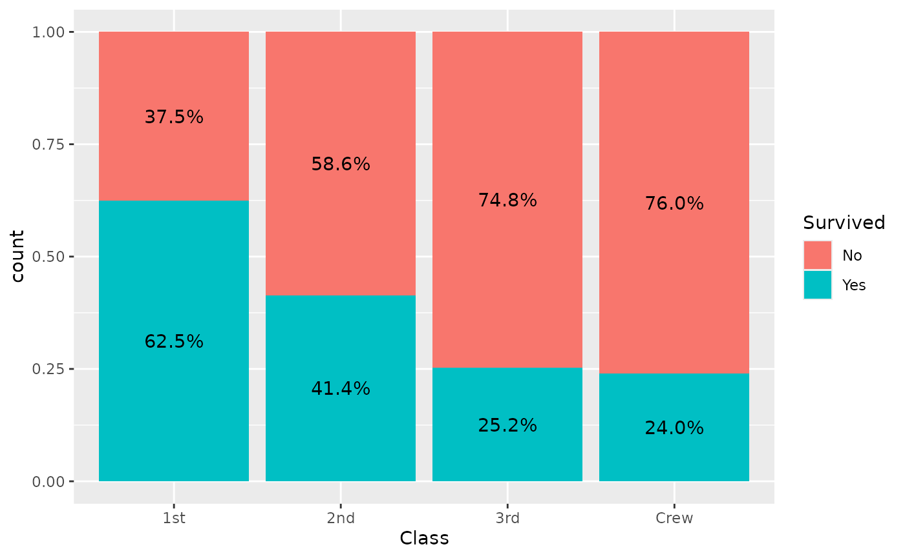
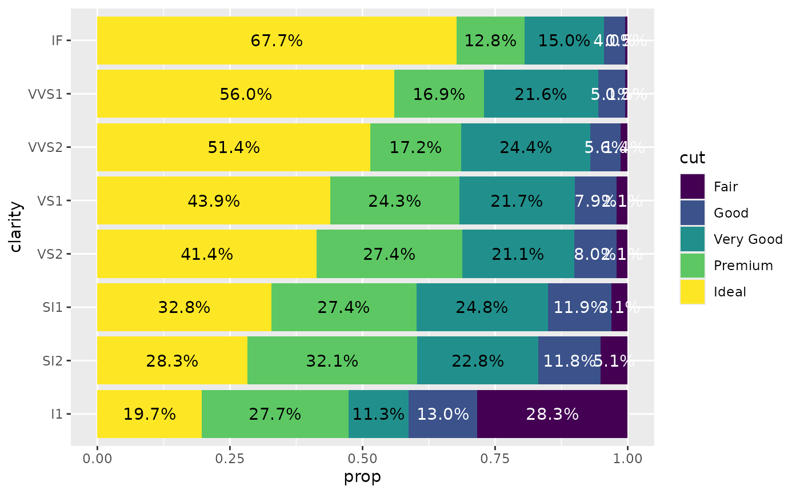

stat_prop() is a variation of
ggplot2::stat_count() allowing to compute custom
proportions according to the by aesthetic defining the
denominator (i.e. all proportions for a same value of
by will sum to 1). The by aesthetic
should be a factor. Therefore, stat_prop() requires the
by aesthetic and this by aesthetic
should be a factor.
Adding labels on a percent stacked bar plot
When using position = "fill" with
geom_bar(), you can produce a percent stacked bar plot.
However, the proportions corresponding to the y axis
are not directly accessible using only ggplot2. With
stat_prop(), you can easily add them on the plot.
In the following example, we indicated stat = "prop" to
ggplot2::geom_text() to use stat_prop(), we
defined the by aesthetic (here we want to compute the
proportions separately for each value of x), and we
also used ggplot2::position_fill() when calling
ggplot2::geom_text().
d <- as.data.frame(Titanic)
p <- ggplot(d) +
aes(x = Class, fill = Survived, weight = Freq, by = Class) +
geom_bar(position = "fill") +
geom_text(stat = "prop", position = position_fill(.5))
p
Note that stat_prop() has properly taken into account
the weight aesthetic.
stat_prop() is also compatible with faceting. In that
case, proportions are computed separately in each facet.
p + facet_grid(cols = vars(Sex))
Displaying proportions of the total
If you want to display proportions of the total, simply map the
by aesthetic to 1. Here an example using a
stacked bar chart.
ggplot(d) +
aes(x = Class, fill = Survived, weight = Freq, by = 1) +
geom_bar() +
geom_text(
aes(label = scales::percent(after_stat(prop), accuracy = 1)),
stat = "prop",
position = position_stack(.5)
)
A dodged bar plot to compare two distributions
A dodged bar plot could be used to compare two distributions.

On the previous graph, it is difficult to see if first class is over-
or under-represented among women, due to the fact they were much more
men on the boat. stat_prop() could be used to adjust the
graph by displaying instead the proportion within each category
(i.e. here the proportion by sex).
ggplot(d) +
aes(x = Class, fill = Sex, weight = Freq, by = Sex, y = after_stat(prop)) +
geom_bar(stat = "prop", position = "dodge") +
scale_y_continuous(labels = scales::percent)
The same example with labels:
ggplot(d) +
aes(x = Class, fill = Sex, weight = Freq, by = Sex, y = after_stat(prop)) +
geom_bar(stat = "prop", position = "dodge") +
scale_y_continuous(labels = scales::percent) +
geom_text(
mapping = aes(
label = scales::percent(after_stat(prop), accuracy = .1),
y = after_stat(0.01)
),
vjust = "bottom",
position = position_dodge(.9),
stat = "prop"
)
Displaying unobserved levels
With the complete argument, it is possible to indicate
an aesthetic for those statistics should be completed for unobserved
values.
d <- diamonds |>
dplyr::filter(!(cut == "Ideal" & clarity == "I1")) |>
dplyr::filter(!(cut == "Very Good" & clarity == "VS2")) |>
dplyr::filter(!(cut == "Premium" & clarity == "IF"))
p <- ggplot(d) +
aes(x = clarity, fill = cut, by = clarity) +
geom_bar(position = "fill")
p +
geom_text(
stat = "prop",
position = position_fill(.5)
)Adding complete = "fill" will generate “0.0%” labels
where relevant.
p +
geom_text(
stat = "prop",
position = position_fill(.5),
complete = "fill"
)Using geom_prop_bar() and
geom_prop_text()
The dedicated geometries geom_prop_bar() and
geom_prop_text() could be used for quick and easy
proportional bar plots. They use by default stat_prop()
with relevant default values. For example, proportions are computed by
x or y if the by
aesthetic is not specified. It allows to generate a quick proportional
bar plot.
ggplot(diamonds) +
aes(y = clarity, fill = cut) +
geom_prop_bar() +
geom_prop_text()
You can specify a by aesthetic. For example, to
reproduce the comparison of the two distributions presented earlier.
d <- as.data.frame(Titanic)
ggplot(d) +
aes(x = Class, fill = Sex, weight = Freq, by = Sex) +
geom_prop_bar(position = "dodge") +
geom_prop_text(
position = position_dodge(width = .9),
vjust = - 0.5
) +
scale_y_continuous(labels = scales::percent)
You can also display counts instead of proportions.
ggplot(diamonds) +
aes(x = clarity, fill = cut) +
geom_prop_bar(height = "count") +
geom_prop_text(
height = "count",
labels = "count",
labeller = scales::number
)
#> Warning in ggplot2::geom_bar(mapping = mapping, data = data, position =
#> position, : Ignoring unknown parameters: `height`
#> Warning in ggplot2::geom_text(mapping = mapping, data = data, position =
#> position, : Ignoring unknown parameters: `height`, `labels`, and
#> `labeller`